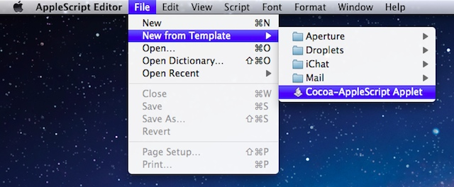
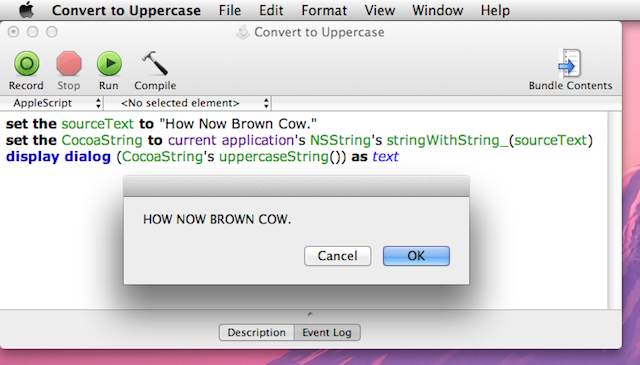
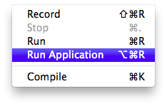
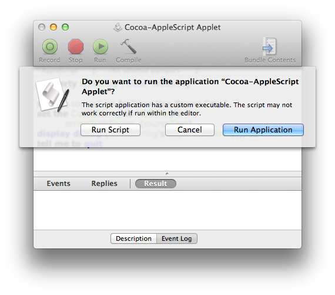
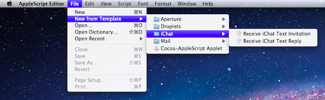
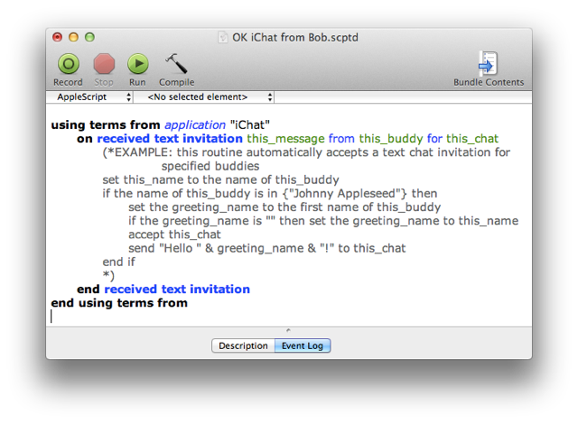
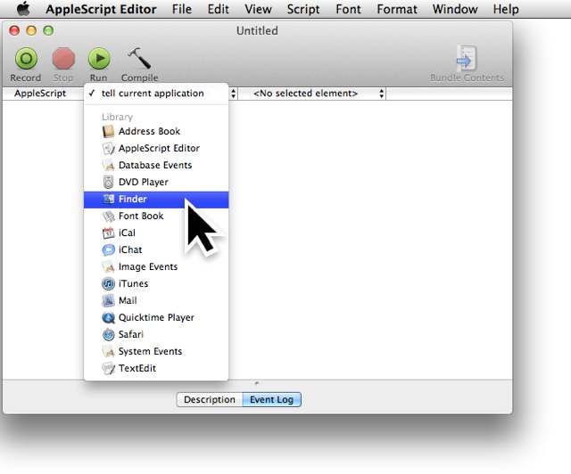
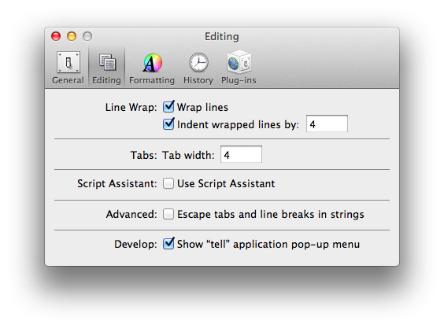
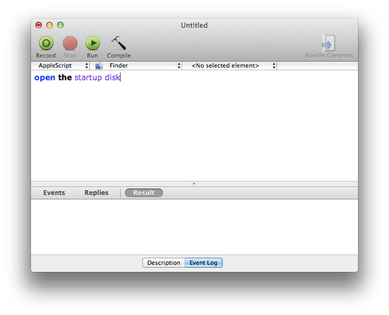

AppleScript in Lion
The focus of AppleScript in Lion is about bringing the power of AppleScript/Objective-C to the desktop.
Cocoa-AppleScript Applets. The AppleScript Editor can now create and edit Cocoa-AppleScript applets that provide direct access to the Cocoa frameworks from within their AppleScript code, by using the AppleScript/Objective-C bridge first introduced in Snow Leopard. Accordingly, applets can now display custom interfaces, such as progress windows, programmatically, taking advantage of the standard Cocoa interfaces available in the OS.
Script Templates. New for AppleScript Editor is a template menu, containing a variety of useful script templates, including scripts for creating file processing droplets, Aperture import actions, Mail rule actions, and iChat message responders.
Global Script Application Targets. In addition, the AppleScript Editor now has the ability to globally target a script to a specific application through a new optional “tell application” popup menu. Targeted scripts are excellent for quick development as they do not require the use of tell blocks or using terms clauses.
Cocoa-AppleScript Applets
AppleScript in Mac OS X v10.6 (Snow Leopard) introduced AppleScript/Objective-C and the ability to create AppleScript applications in Xcode that could directly access any part of the Cocoa frameworks. In Mac OS X v10.7 (Lion) the power of AppleScript/Objective-C has been made accessible to scripters with the introduction of Cocoa-AppleScript Applets in the AppleScript Editor.
For the first time, AppleScript can access the Cocoa Foundation and AppKit frameworks directly within applet code, augmenting AppleScript's legendary ability to communicate with and control applications, with Cocoa’s powerful routines for text, number, window, and image manipulation. Combine this new Cocoa integration with AppleScript’s existing access to the UNIX command-line, and you’ve got a fantastic automation powerhouse.

Selecting the Cocoa-AppleScript Applet script template from the AppleScript Editor's New From Template menu.
Cocoa-AppleScript Applet Template
The new Cocoa-AppleScript applet is available as a script template via the AppleScript Editor's New From Template menu. Once selected, you will be prompted to name and save the new applet. This applet accepts most standard AppleScript constructs and code, as well as statements and routines written in AppleScript/Objective-C.

Using AppleScript/Objective-C in an AppleScript applet, to transform text to uppercase.
Caveats
- Although Cocoa-AppleScript applets can be created and edited from within the AppleScript Editor application, they are executed by using a new “Run Application” command in the AppleScript Editor's Script menu that runs applets by launching them. This means that the AppleScript Editor Event and Result panes will not report data during applet execution.

If the standard Run menu item or Run button in the toolbar is used to execute an applet or droplet containing AppleScriptObj-C code, an alert will be displayed informing the user that the script should not be executed within in the AppleScript Editor but should be launched using the Run Application menu option:

(NOTE: The AppleScriptObjC Explorer is a third-party script editor application able to both edit and run AppleScript scripts containing AppleScript/Objective-C code.) - Cocoa-AppleScript applets can be executed on computers running either Mac OS X v10.6 (Snow Leopard) or Mac OS X v10.7 (Lion). However, the applets cannot be edited using the AppleScript Editor in Mac OS X v10.6 (Snow Leopard).
- Properties in Cocoa-AppleScript applets do not retain changed values between executions of the scripts. Use the standard Cocoa User Defaults mechanism to store and retrieve data dynamically.
AppleScript/Objective-C Updates
In Mac OS X Lion, two important changes were made to AppleScript/Objective-C
- AppleScriptObjC can now call plain C functions, in addition to Objective-C. To call a C function, tell "current application" to execute the function, as in this example:
tell current application to NSRectFill(aRect)
- Function parameters of type "void *" are now handled as if they were of type "id". When using such a parameter from AppleScript, you may pass any AppleScript value. Previously, only "missing value" (equivalent to NULL in C) was allowed.
Script Templates
Finally, an easy way to quickly create your favorite types of scripts! AppleScript Editor in Lion introduces a New from Template menu that contains a variety of useful script templates, including templates for creating Mail rule actions, iChat response scripts, Aperture import actions, and file processing droplets. You can add your own templates by placing the template scripts in the Home > Library > Application Support > Script Editor > Templates folder.

Selecting an iChat template from the AppleScript Editor New from Template menu.
Selecting a template from the menu will prompt you for a name and location for the duplicated template file. Once provided the duplicated script file will open in the AppleScript Editor:

An iChat event handler script for automatically responding to specified buddies.
Global Script Application Targets
For scripters wanting a simple way to target scripts at a particular application, AppleScript Editor in Lion implements a target application menu, beneath the toolbar in a script window, from which you can select the application that will be the target of all the script statements.

This feature can be enabled in the AppleScript Editor editing preference pane by selecting the checkbox titled: Show tell
application pop-up menu

When a script is targeted at a specific application, you don't need to include tell blocks or tell statements for the targeted applicaiton.
